We built the resource library fast and always meant to revisit it, but didn’t. It remained a too simple, text-heavy, and hard to navigate list.
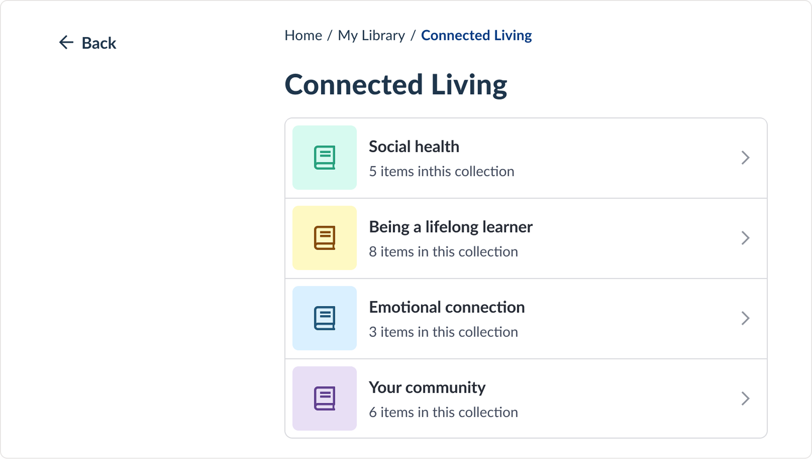
Vivia
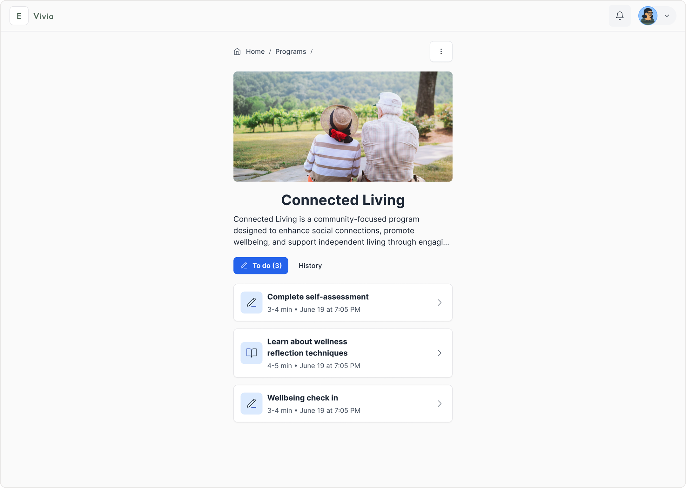
Vivia is a wellbeing app that helps older adults stay informed, safe, and connected in their daily health.
I redesigned the experience to make it easier to navigate, easier to read, and more supportive for both seniors and their caregivers.
Why does this matter?
Before the redesign, many users felt lost in the app. They were having a hard time finding relevant information, tasks didn’t feel useful, and caregivers struggled to manage multiple profiles. This led to low engagement and overall confusion.
Redesign improvements
+ introduced a silly hat day where we all were wearing silly hats to the meeting
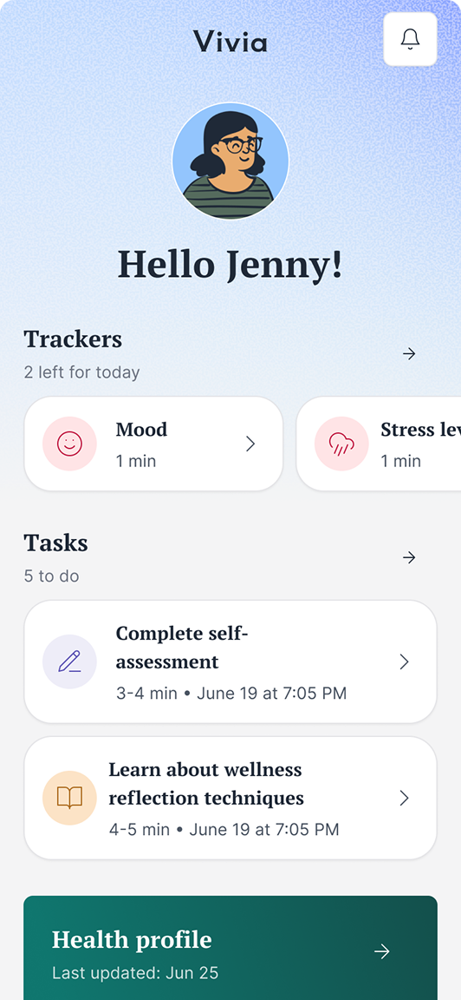
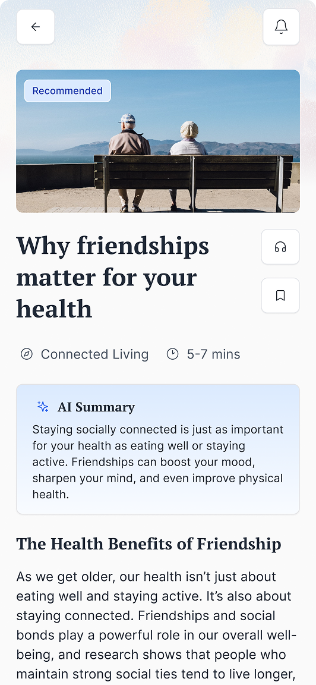
This app helps older adults manage their health. They take assessment, build a health profile, and get recommended helpful programs and resources.
But over time it accumulated a lot of UX debt.
We built the resource library fast and always meant to revisit it, but didn’t. It remained a too simple, text-heavy, and hard to navigate list.

The homepage was boring and it wasn’t clear how to scale it. Plus, it didn’t surface enough of the user’s recommendations for them to know what the value of the app was.
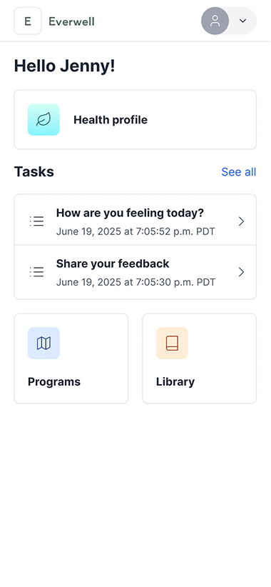
Speaking of recommendations, they were hard to find and also not very engaging. They’re the main value add of the app, so that’s an issue!
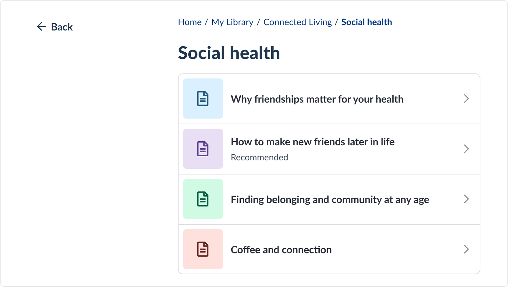
User and stakeholder feedback confirmed what we had suspected:
Senior user
There’s too much going on here. I don’t know where to start.
Stakeholder
The homepage feels blah and not fun. Can we take it up a notch?
Caregiver user
I’m taking care of my parent and even I find the app confusing. Where do I find reports after they’ve completed the questionnaire, again?
Stakeholder
I wish I could go back to that one video, but I forgot what it was and there are so many folders here!
It was time to update the design.
Make the app simpler to navigate and make the key actions easier to recognize
More relevant, visual, and accessible content that’s easier to revisit
Improved experience for caregivers managing someone else’s health
Snappy and scrappy!
Due to budget and time constraints, I used simple research methods like past tests, heatmaps, talking to older adults my colleagues knew, and reviewing other apps.
AI tools helped me analyze feedback and explore ideas. But every output was reviewed by a human and based on human input and feedback.
The main finding
Home, sweet home
The new homepage is made of simple widgets that highlight programs, resources, and health reports. Newly added visuals and short labels make each section easy to recognize and understand at a quick glance.
Small copy change, big impact
Changing the heading from “Recommended programs” to “Start something new” increased clicks by 30%.
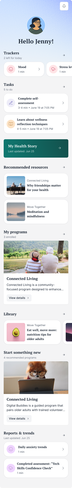
Take down this book and slowly read
A redesigned resource library with visual cards, clear categories, and a recommended section that makes it easier to browse and find helpful articles. New features like history and bookmarks help users get back to past resources.
And I could scroll 500 miles, and I could scroll 500 more
I added more visuals and grouping to make the library easier to scan, but this meant spending more space per item. I accepted the extra scrolling to keep the experience feel calmer and easier to use.
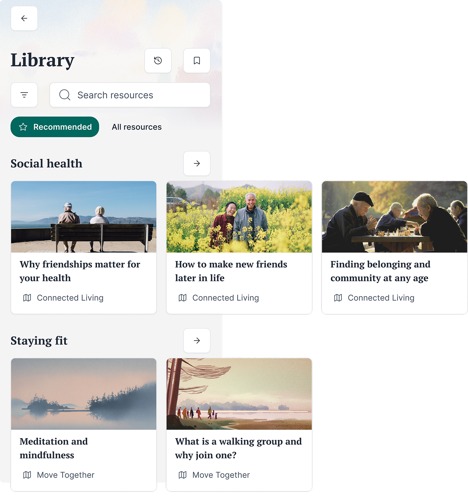
Good morning, sir, would you care for an educational resource?
Recommendations were buried in the completed tasks list which meant they were hard to find. I advocated for a persistent lightweight notification system that’s easier to revisit and scale.
I check it once, I check it twice
Moving recommendations into notifications made them more visible, but it also added another place for users to check. However, now users could always see if there was something new or not rather than having to guess.
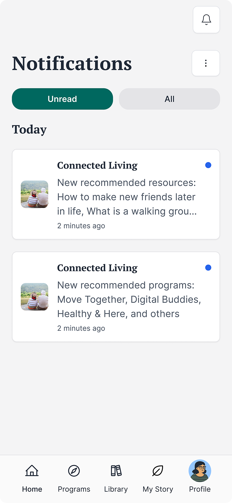
Reading is fundamental (unless you prefer to listen)
I redesigned content pages with large visuals and time estimates. Keeping accessibility in mind, we added auto-generated captions for videos and planned voice-over support for articles.
So many options, so little time
We explored adding audio as well, but audio required significantly more engineering effort and ongoing maintenance. Considering the scope and timeline, I prioritized the AI summary as a higher-impact, lower-cost way to improve accessibility. The audio support was still planned as a future enhancement.
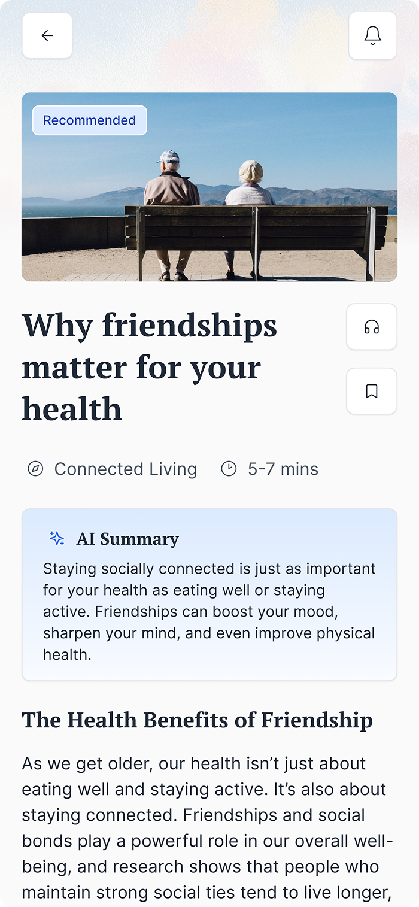
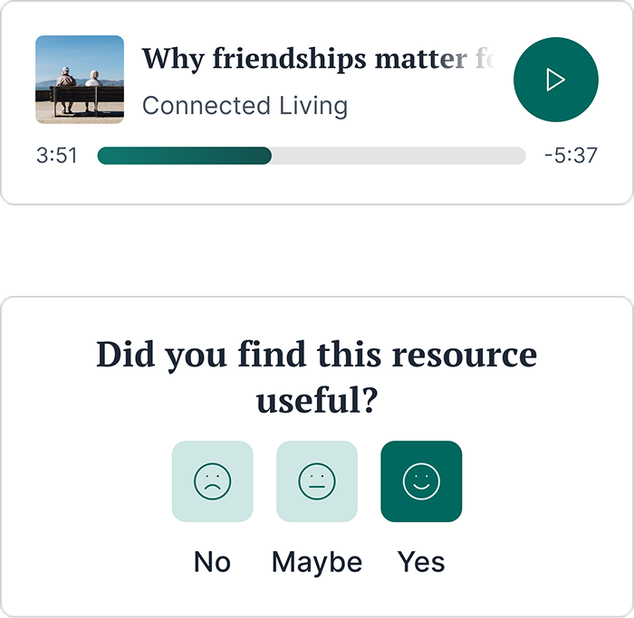
Caring deeply
A sizeable percentage of users were caregivers, with some caring for more than one person that could benefit from this program.
Multi-profile support allows them to switch between accounts, create new profiles, and manage settings for different family members in one place.
Profile handoff
We allowed caregivers to manage profiles, but also built in settings for patients to take ownership if they wanted to. This was especially relevant since the system needed to be able to scale for other situations, such as parents taking care of children.
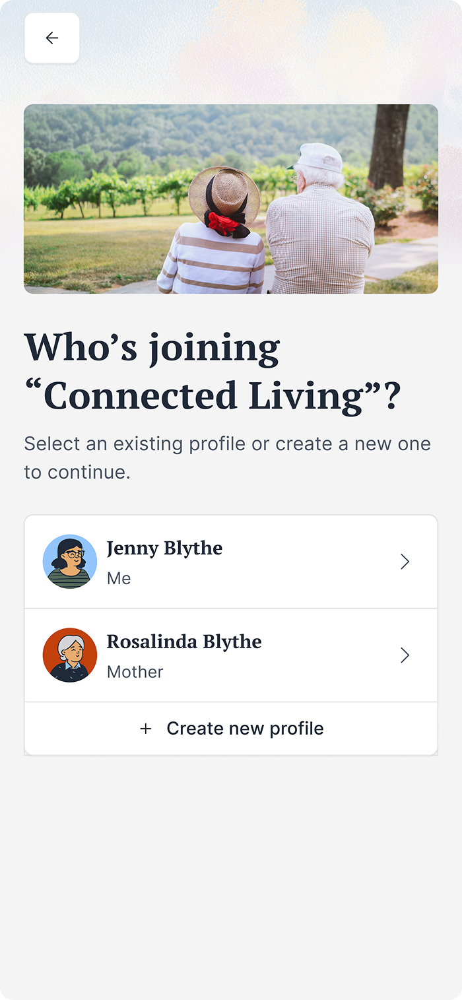
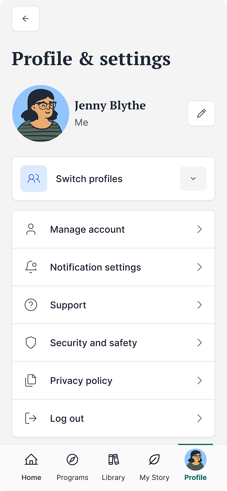
The users rejoice!
Users liked the new design more and found it easier to use. The clearer layout and friendlier language helped them feel more confident.
One of our primary metrics, task success, went up from 60% to 90%, and most users said the app felt more welcoming and less “hospital” and “sterile” than before.
Caregiver experience improvement
Many users were caregivers, so I designed a multi-profile system that lets them switch profiles quickly, manage each person’s programs, and transfer control when the patient is ready.
This made it much easier for caregivers to support more than one person in the app.
Scale up, up, and away
The design is now modular and can support many types of programs and content.
This makes the app easier to update and scale in the future.
Improve onboarding, navigation, and personalization for different user needs
Strengthen accessibility features, including clearer voice support for users who struggle to type.
Expand the AI features with better summaries, an optional assistant, mood check-ins, and smart routines designed for older adults.
Designing for older adults
Older adults aren’t a single group, and their needs can vary widely. Clear copy and guidance matter just as much as making the text bigger. Many worry about making an irreversible mistake, so actions should feel obvious and easy to undo.
Most proud of
Even with limited time and tools, we found smart ways to learn from users. Even though the research was informal, the insights were invaluable!
Best lesson learned
I learned how important it is to understand scope and choose my battles. Sometimes you push for what really matters, sometimes you compromise, and sometimes you make do with what’s possible in the moment.
Knowing the difference helps the work move forward without losing the core of the design.
Explore other case studies using the buttons below.